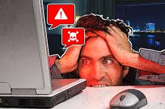

O uso de softwares falsos, também conhecidos como softwares piratas, refere-se à prática de instalar e utilizar programas que foram copiados, distribuídos ou modificados de forma ilegal. Isso inclui a violação dos direitos autorais e a distribuição de versões sem a devida licença ou permissão dos desenvolvedores. Essa prática pode parecer vantajosa à primeira vista por evitar o pagamento por um software original, mas traz diversos riscos legais, de segurança e de funcionalidade.
Software Crackeado: São versões alteradas do programa original, nas quais mecanismos de proteção, como a ativação por licença, foram desativados ou removidos. Um exemplo é um jogo ou programa que foi modificado para não exigir chave de ativação.
Software de Distribuição Ilegal: São cópias idênticas do programa original distribuídas sem a devida licença. Essas versões podem ser baixadas de sites de pirataria, fóruns ou até compartilhadas diretamente entre usuários.
Software Modificado: Alguns softwares falsos vêm com modificações que alteram seu comportamento original, como funcionalidades extras ou a remoção de restrições. No entanto, muitas vezes, esses softwares vêm com malware embutido.
Riscos de Segurança: Softwares piratas frequentemente vêm acompanhados de malware, como vírus, trojans, ransomware ou spyware. Isso ocorre porque ao modificar ou crackear o software, o invasor pode incluir código malicioso para roubar dados, comprometer a segurança do dispositivo ou utilizá-lo para fins criminosos, como ataques DDoS.
Problemas de Estabilidade e Funcionalidade: Além de bugs, muitas vezes o software pirata vem com alterações que prejudicam o desempenho do programa e até do sistema como um todo.
Riscos Legais: O uso de software falsificado é uma violação direta dos direitos autorais e das leis de propriedade intelectual. Empresas que fazem uso de software pirata podem ser processadas e multadas, e em alguns casos, até indivíduos podem enfrentar penalidades legais.
Ausência de Suporte Técnico: Usuários de software pirata não têm acesso ao suporte técnico oficial do desenvolvedor. Isso significa que, se surgir um problema técnico, você não poderá contar com assistência oficial para resolvê-lo.
Muitas pessoas ou empresas optam por usar software pirata por razões econômicas, especialmente em regiões onde o preço de softwares licenciados é relativamente alto. No entanto, a economia inicial feita ao evitar o custo de um software legalizado frequentemente resulta em despesas maiores a longo prazo devido aos problemas causados por falhas técnicas ou invasões de segurança.
Para empresas, as consequências podem ser ainda mais graves. Usar software pirata pode significar perder acesso a informações importantes devido a ataques de malware ou ser alvo de ações legais por violação de direitos autorais. Isso sem contar os prejuízos que podem vir de perdas de dados ou interrupção nas operações.
Utilizar softwares falsos pode parecer uma solução barata e fácil, mas os riscos e problemas que essa prática traz — desde vulnerabilidades de segurança até ações legais — fazem com que seja uma escolha perigosa. O uso de alternativas legais, como software de código aberto, ou a adesão a modelos de pagamento mais flexíveis são opções muito mais seguras e viáveis.